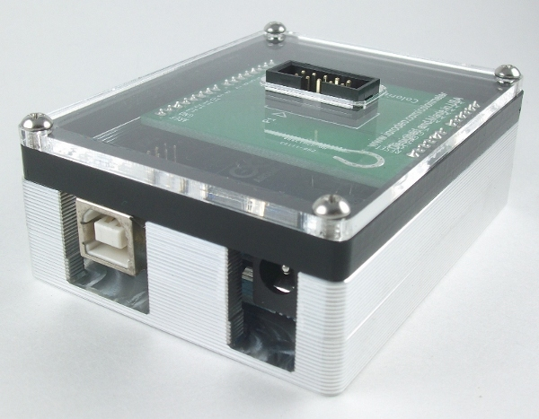
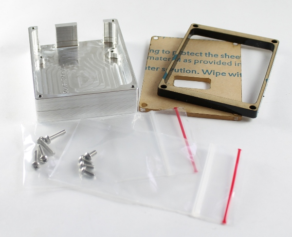

Optional TuxCase kit¶
The optional colorimeter TuxCASE kit can be used as a protective enclosure for the Arduino, protecting the electronics boards from liquid spills in the lab when using the colorimeter. The aluminum enclosure is the same as the TuxCASE for Arduino. The main difference is the top - the clear acrylic top has been modified to include a cutout for the header on the colorimeter shield. A black acrylic spacer is included to raise the height of the clear top. TuxCASE is designed and manufactured by Tux-Lab. For additional information on the TuxCASE manufacturing procedure and supporting documentation, visit the Tux-Lab project page.

TuxCase kit contents¶
- Aluminum TuxCase for Arduino Uno
- Black acrylic spacer
- Clear acrylic cover with connector cutout
- 4 x ¼” long 18-8 stainless 4-40 round phillips machine screws for mounting Arduino into the case
- 4 x ½” long 18-8 stainless 4-40 round phillips machine screws for securing the clear top cover
